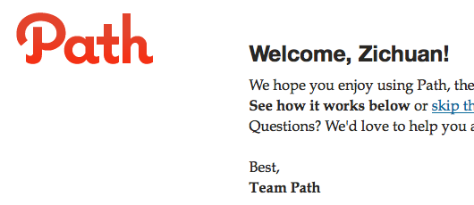

我们的生活碎片化了吗？
无论Path是否能够成为Facebook后新的一种社交模式，从Path的商业逻辑上来看，这是一种信息精细化、需求碎片化的合理趋势，之前曾经提过的下一代基于网络的碎片化生活正在开始。

碎片化生活的定义是人们开始选择把生活中某一个或某一些体验打包变成一种“碎片”，选择性的选择这些“碎片”，或者把这些“碎片”拼凑成属于自己一种新的体验。那么，碎片化生活的核心便是如果打碎用户的体验，并找到客户最需要的一种碎片化组合方式。
Path和Flickr以及Facebook最大的区别在于，Path发现有一些使用者，他拥有更窄的朋友圈子，或者说更希望让至交去了解他每天的生活，而不是Flickr和Facebook那样更广阔的社区──它更像是一种家庭的私人相簿，而记录的是每天生活的某“一个”时刻。
碎片化服务的一个显著特点是，你一定可以在传统模式中找到同样满足需求的方法──你也可以在Flickr或者Facebook上只加入至交好友，每天只上传一张照片。但当出现更轻量级的碎片服务时，人们还是愿意选择这种碎片式的服务。
碎片化生活的两个前提
碎片化生活的出现有两个关键的前提：一是可以被细化并精准传递的信息达到一个可观的量值；二是与信息源交互的触点数（Touchpoint）到达一个可观的量值。
而这两个前提本身又是相辅相成的，当与信息源交互的触点数越多，信息源可提供的信息量越大，用户与其发生交互的门槛（包括技术上和意愿上）就越低，用户越与其发生交互，信息源能够根据交互过程产生的反馈就越多，信息源的学习能力就越高，信息源越能够知道消费者希望得到什么样的信息，越能够量体裁衣的满足消费者不同的定制化需求，当定制化需求被最大限度地满足，又反过来增加用户对于“源”的依赖，从而增加与其交互的触点数。
前提达成
两件事情使得现在已经具备碎片化生活形成需要的两个前提。
一是Web2.0时代的大行其道和成熟，更多的信息是由我们自己创造的，我们在SNS上的状态，我们的转贴，我的博客，我们在微博上的支言片语都使得这个信息池加上了新的一种属性──社交标签。
而社交网络的出现使得信息需求和社交需求强绑定，对于拥有社交标签的信息需求变得越来越大，因为我们越来越发现，关注跟我类似的人关注的信息是最有效率的──社交标签使得信息被更加人性化地，更自然地被细化──我不知道该怎么为“UGG雪地靴”分类，我觉得“不靠谱水瓶座爱之物”这样的标签很合我意。换言之，社交标签使得定制化的信息细化成为可能。
二是移动设备的突破性发展以及更先进的交互技术使得与“信息源”发生交互的触点数量剧增，我们可以随时随地查询Facebook上好友的状态，拍照上传在生活中的乐事上传微博，对正在用餐的餐馆进行评论。这些“交互可能”（即Touchpoint）在以前是不可能发生的──那时我们要寻找一台笨重的计算机，在网吧或者家里书房光明正大或偷偷摸摸地体会信息带来的刺激。
碎片化服务的特点
但凡是类似于Path这样碎片化的服务，一定有两个特点，又跟上述这两件正在发生的事情息息相关。
一是它一定依靠一个巨大的、带有社交标签的信息源──Path和Facebook的绑定，单向或双向的同步；二是它一定支持移动设备──Path具备免费的iPhone程序，可以将每天生活中发生的“一件事”通过手机记录在Path上。你瞧，Path必须有足够多的具有社交标签的信息已及让用户即时交互的能力。
Path还需要考虑的是，如何让用户买单，如果它能够有一个合适的盈利模式，它才可被成为一种可复用的商业模式。但如果我们假设通过会员制或者广告它可以盈利，我们不妨从这个角度来思考一种新商业模式的到来。
两大怪兽角力的新商业模式时代
从这个商业逻辑出发，可以总结出一种新的商业模式──即时性的，对带有社交标签信息源进行消费的服务。用更暴力的话说，就是给这些信息打上社交标签，并让那些怪癖的人们为这些怪癖的信息买单。
这两件事情没有先后，豆瓣这些都拥有足够多的拥有社交标签的信息，但他们在发愁怎么让人为这些信息买单，于是他们出了购书单；淘宝拥有让人消费其上信息的能力，但他们在发愁怎么让人把消费信息变成一种社会化的活动从而更加依赖，于是他们出了淘江湖，手机版的淘宝。
也就是说，这个世界产生了两个怪物，一个是拥有庞大的具备社交信息的标签，他们大部分是Facebook和Twitter这样的SNS选手；另一个是能够让用户真正为信息买单的能力，他们大部分是iTune和Taobao这样的电子商业执牛耳者。他们一个正在学习让用户买单的能力，一个正在学习为他们的信息打上社会化印记的能力。
Path代表的微创业
同时，有意思的是，在这两种怪物之中，一定会活跃着一些独辟蹊径的角色（我们称它们为微创业），他们利用已经现有的具备社交标签的信息，让用户找到这些信息，并又具备让客户买单的能力──他们把两大怪物各自的缺失连接在一起。Path也许就是一个。
从思考新的创业模式出发，这样的商业逻辑帮助我们延伸出很多新的创业机会，如果你正在思考如同Path一样的创业，你要思考的是：第一我能不能借助现有的社会化信息？第二我能不能让用户即时的使用这些信息把服务整合在他们的生活体验中？第三我能不能让用户为这些信息买单？
沿着这种商业逻辑，你是否可以想到你的创业逻辑？